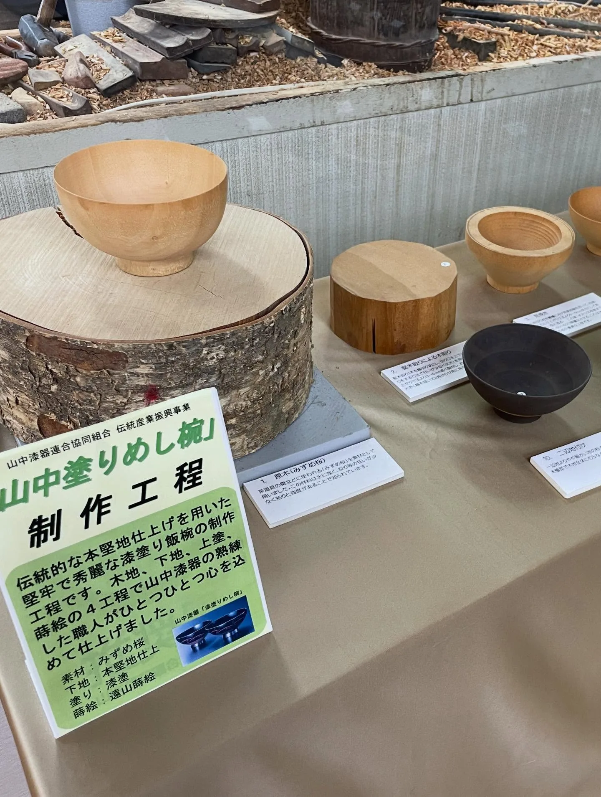
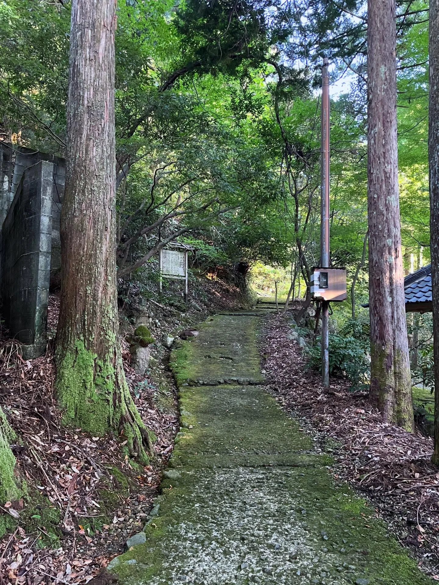
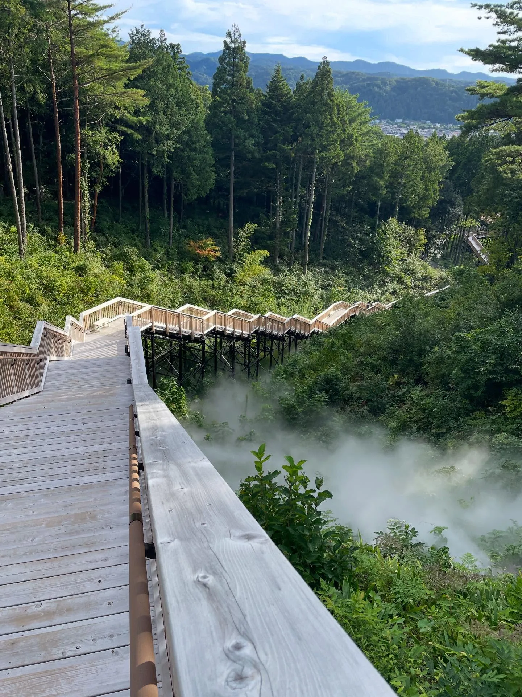
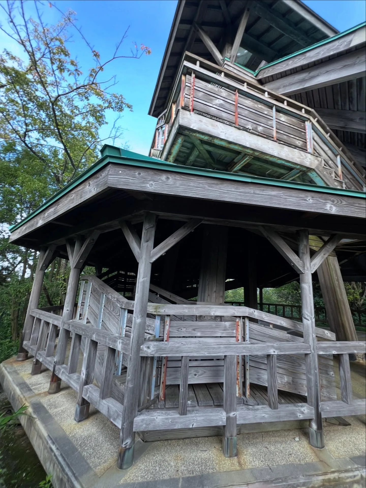
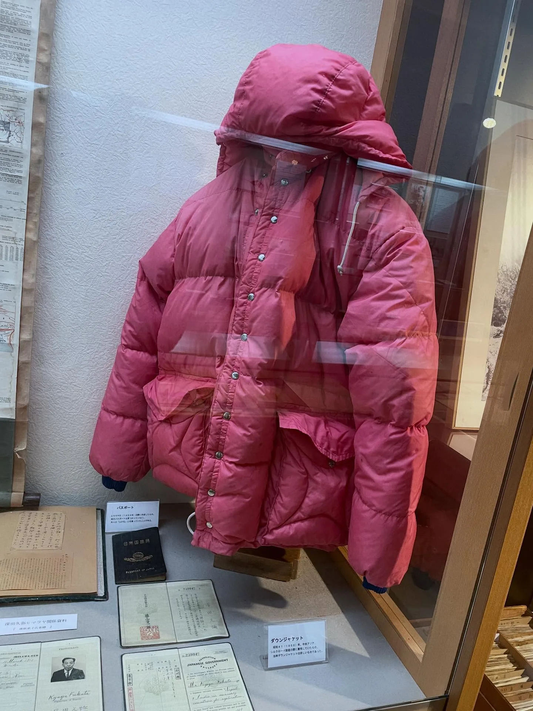
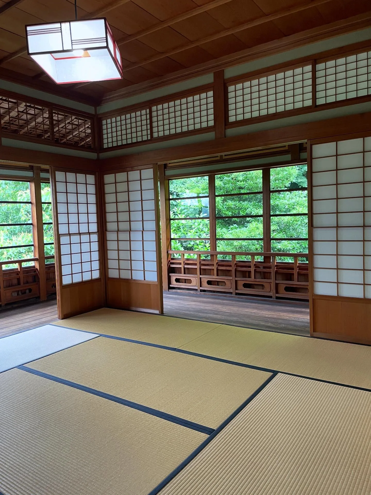
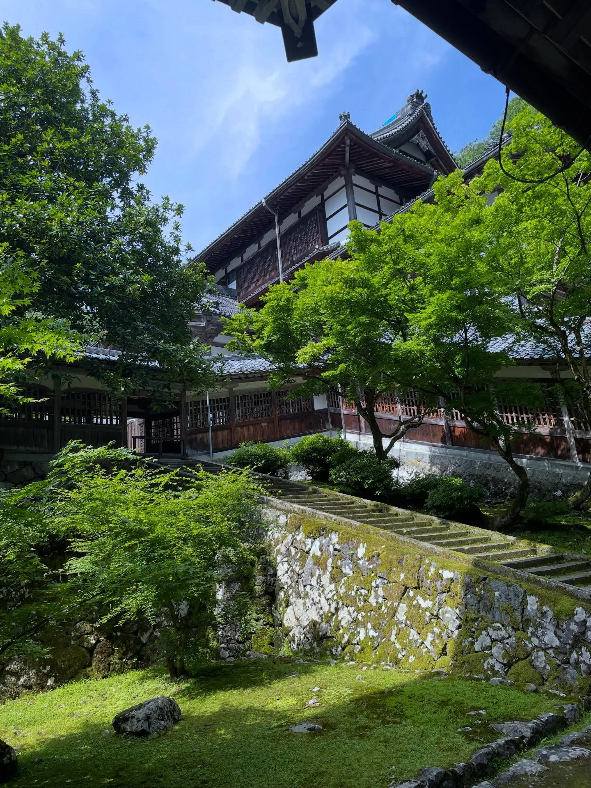

再回加賀：三大溫泉區、大聖寺與福井遊記
先預告：這是超無聊的一篇。
剛好 9 月底有個空檔，人又在福井，於是回到六七月待的加賀，一起參加由加賀王小鬼舉辦的「生活實驗室」活動。許多細節趣事就揭過不談了，只想趁機紀錄加賀地區的景點，當作是到此一遊的證明。（六七月來的時候，完全沒寫貼文紀錄，通通放在這裡吧！！！）
山中溫泉
加賀溫泉車站出發，公車車程 25 分鐘。來兩三次都覺得遊客沒很多，街上氛圍也沒有熱絡感……不過這裡是三個溫泉區域裡我最喜歡的！可以買「山中漆器」和「九谷燒」，根本超適合我……
和漆器商店的老闆聊天（講著講著，居然可以用中文滿順地介紹！），詢問如何辨別真的漆器還是塑膠製，老闆老實地說很困難，就是看價格。
山中うるし座
山中漆器傳統產業會館，除了展售許多不同品牌的漆器之外，可以看到師傅的製作過程，也有漆器相關的常設展可以免費參觀。

備忘
- 09:30–16:30，休週三
鶴仙溪步道
秋天和冬天似乎是景色最好的時節，沿著溪水散步滿舒服的。亮點是某個路段可以看到對面溫泉旅館男湯的「風光」，保養眼睛……←寫這段的重點在這裡

備忘
- 全長 1.3 公里，步行約 30 分鐘
和酒 BAR 縁がわ
民宿老闆推薦的酒吧，座位很少、建議預約，風格獨樹一格，餐食、使用的容器也都很用心講究，還可以跟老闆聊天。就算對地酒沒有很懂，也可以請老闆幫忙搭配，我們推薦 3 杯的 set，可以比較、品嚐出不同風味的差異。九月那次我們太臨時了，只約得到白天的下午時段，很 chill 很舒服～（七月和九月我們都去過。）
@engawa.yamanakaonsen
備忘
- 14:00–17:00、18:00–23:00，休週四
- 約 3,000–5,000 日圓
山中溫泉總湯 菊之湯
女湯在「山中座」的建築裡，男湯則是另外一棟。男湯出入口正對面可以喝喝看溫溫的溫泉水……好怪……一定要喝喝看 XD
備忘
- 06:45–22:00，週二公休
- 500 日圓／人
山代溫泉
加賀溫泉車站出發，公車車程 13 分鐘。總湯我沒泡過，據說超燙。整體店家不多、觀光感低，感覺更緊鄰一般住宅區一點，不過有幾間從外面看滿厲害的溫泉旅館。
あいうえおの杜 かいろう
散散步還可以，固定時間會噴灑水霧，拍照好看，但我們覺得有點無聊，可以說滿不推這裡的。（之所以叫「あいうえお」，是因為這裡是日本五十音的發源地。）

也因為太閒了，我們再走去旁邊的「萬松園榮螺堂」，藍綠色的建築有著可愛的螺旋斜坡，上到觀景台可以 360 度眺望這個地方，值了。

片山津溫泉
加賀溫泉車站出發，公車車程 11 分鐘。總湯是比較新穎、現代感的建築，跟山代和山中完全不同的風格，特色是緊臨潟湖，泡完湯可以去附設咖啡廳眺望湖景。街道上感覺比較沒東西？
附近另一個景點是「雪の科学館」，先前去都還在閉館整修，現在已經開放了，朋友很推薦。
那谷寺
於 717 年開闢，屬白山信仰。有多棟國家重要文化財建築，以及洞窟地形，芭蕉先生也有去過。推薦給喜歡庭園散步的人。
備忘
- 09:15–16:00
- 1,000 日圓／人
大聖寺：現在的大聖寺，沒有大聖寺
大聖寺站一帶過去是區域發展的中心，但近代隨著觀光業興起、交通樞紐的改變（加賀溫泉站成為新幹線的停靠站），發展重心漸漸轉移。「大聖寺」這座古廟已於戰國時代的戰火中燒毀，但地名仍保留了下來。
深田久彌 山之文化館
很厲害的登山家兼作家，展示空間小小的，不過有一間比展示空間還大的山相關的圖書館！！

備忘
- 09:00–17:00，週二公休
大聖寺鴻玉莊
最最喜歡的是曾為料亭的獨立建築，像是小迷宮一樣的動線設計，很有趣。

備忘
- 10:00–16:00，僅六日開放
竹之浦館（竹の浦館）
沒開車真的到不了的那種，不過一般遊客也不會去的地方就是了，我是因為跟著民宿老闆一起去的。這是 1930 年，由北前船主後代和有志之士捐贈建造的「舊瀨越小學校」，兩層樓的木造建築，全盛時期有一百名左右的學生，後因學生銳減而於 1967 年廢校；2003 年重新啟用，現在作為社區空間，提供場地租借、辦理工作坊等體驗活動。好喜歡！
@takenourakan
備忘
- 北前船：江戶時代中期至明治時代後期（約 18 世紀中葉至 19 世紀末），航行於日本海、往返於大阪與北海道之間的商船，靠著在各港口低買高賣商品賺取巨大利潤。石川縣加賀海邊的橋立、瀨越以出產大船主而聞名，是當時全日本最富裕的村落之一，其中之一的「瀨越」，就是竹之浦館所在的地區。
- 09:00–17:00，週三公休
福井縣立恐龍博物館
交通超～不方便～超認真逛大概三天才能逛完，因此只有一天的話，建議就是要一個整天！我還參加了敲化石的體驗……大概敲 10 分鐘就累了 QQ
備忘
- 09:00–17:00
- 1,000 日圓／人
永平寺
交通也不算方便。1244 年創建，曹洞宗總寺院。進入參觀要脫鞋，幾乎都是走在木地板，建築和氣氛都很喜歡，還遇到成群的年輕僧人路過，在其他地方沒看過！芝麻豆腐可以吃一下。推薦給喜歡木造建築的人。

備忘
- 08:30–16:30
- 700 日圓／人
關鍵字石川加賀山中溫泉山代溫泉片山津溫泉大聖寺竹之浦館那谷寺福井縣立恐龍博物館永平寺
留言
電子郵件不會公開，只用來辨識留言者。第一次留言會先經過審核，之後同一個電子郵件的留言會直接顯示。本留言區以 Cloudflare Turnstile 防止垃圾留言。